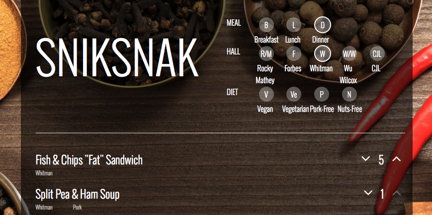
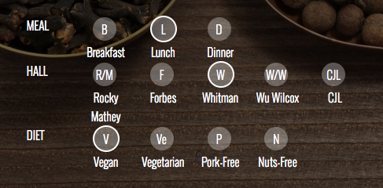
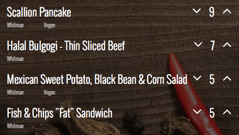

About
SnikSnak is here for those who care about food. We are what we eat, so let's fill our tummies with what's good. Eat happy, be happy.


Find Food Faster
Quickly choose what you want, where you want, when you want. Easily select filters for meal, dining hall, and diets to see what's available today!
See what's Good
Get the inside scoop from others who have eaten already, and make an educated decision on what to eat.

Meat the team
Created by Katherine Lee, Madeleine Clayton, Ricardo de los Reyes, Victor Du, and Tony Jin.
Project for COS333.